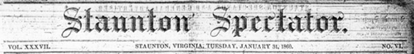
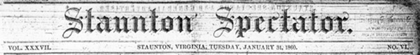

|


About the Valley Newspapers
Examine the typical layout of the Spectator
Page 1 | Page 2 | Page 3 | Page 4
|
About the Valley NewspapersExamine the typical layout of the Spectator Page 1 | Page 2 | Page 3 | Page 4 |
|||||||
|
The Staunton Spectator, established in 1823 by Kenton Harper (interestingly, a native of Chambersburg, Pennsylvania and the son of one of the Franklin Repository's early editors), was published each Tuesday. The paper normally consisted of four pages (occasionally, such as just prior to a presidential election, the editor inserted two extra pages dealing with the positions of national political parties and their candidates), with each page reading seven columns across. Members of the Waddell family (Lyttleton, Joseph, and Lyttleton, Jr.) published the Spectator from 1848 to 1856. Prominent in town affairs and having long-standing ties to the Scotch-Irish descendants of Augusta County's original settlers, the Waddells served on many town committees, especially those related to local Whig party politics. In January 1857, the Waddells were joined as publishers of the Spectator by Richard Mauzy, then the editor of the True American, a local nativist publication. In May 1857, the Spectator absorbed the True American altogether, and in June, 1860, Mauzy bought out the Waddells and took exclusive control of the Spectator. A supporter of the Whig party through 1864, the paper's office was destroyed by the Union army in June of that year. When it resumed publication after the war, the Spectator promoted a Conservative (Democratic) political position. In 1860, the Spectator was sold only by subscription, for $2.50 annually. A per issue price does not appear on any issue of the Spectator because the paper was not available for daily purchase. Advertisements were sold to appear in a minimum of three issues, with significant discounts given for larger ads and those that ran more than three months. Some of the big-city dailies such as the New York Herald were beginning to refuse an ad for a run of any longer than one day, in an effort to trump their competition by ensuring an entirely different paper each day. The Spectator, however, less concerned with trouncing the competition, maintained a policy reflecting its primary business concern--staying afloat financially. |